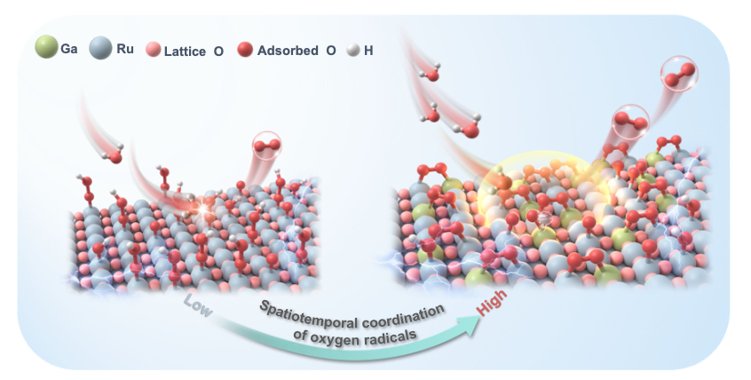

|
Xiaotong Wu 武晓彤 Hi, I am Xiaotong Wu (武晓彤). I am a Ph.D. student at the Donghua University, specializing in Electrochemistry, Materials Chemistry and Catalysis. |

My Profile Photo
|
| News in the Past One Year |
|
[2025.02] 🎉 Happy New Year! |
| Education |
|
| Selected Publications |

|
Xiaotong Wu, Faiza Meharban, Jingsan Xu, Zian Zhao, Xiangmin Tang, Lei Tan, Yujie Song, Weibo Hu, Qi Xiao, Chao Lin, Xiaopeng Li, Yejian Xue, Wei Luo Small, 2025 Link |
|  |
Haifeng Wang, Chao Lin, Lei Tan, Jing Shen, Xiaotong Wu, Xiangxiang Pan, Qi Xiao, Wan Jiang, Xiaopeng Li, Wei Luo Nature Communications, 2025 Link |

|
Faiza Meharban, Xiaotong Wu, Lei Tan, Haifeng Wang, Weibo Hu, Dequan Zhou, Xiaopeng Li, Wei Luo Advanced Energy Materials, 2024 Link |

|
Lei Tan, Xiaotong Wu, Haifeng Wang, Jianrong Zeng, Bingbao Mei, Xiangxiang Pan, Weibo Hu, Meharban Faiza, Qi Xiao, Yonghui Zhao, Chao Fu, Chao Lin, Xiaopeng Li, Wei Luo ACS Catalysis, 2024 Link |

|
Xiaotong Wu, Chao Lin, Weibo Hu, Chao Fu, Lei Tan, Haifeng Wang, Faiza Meharban, Xiangxiang Pan, Pan Fu, Han‐Don Um, Qi Xiao, Xiaopeng Li, Miho Yamauchi, Wei Luo Small Structures, 2024 Link |